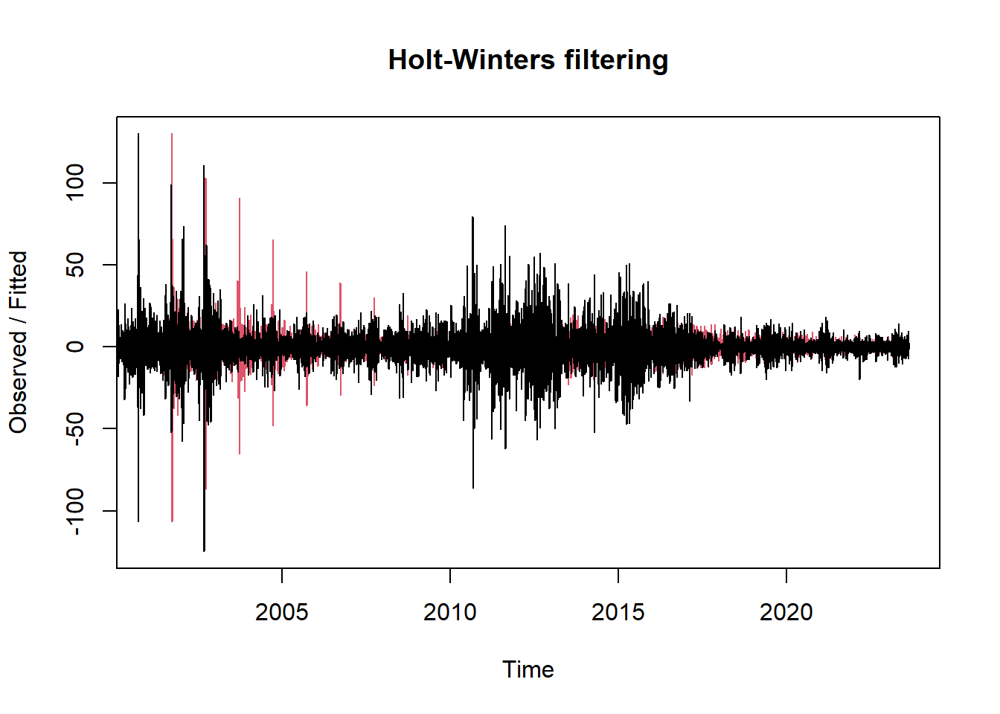

Chapter 6 Modelo de Holt-Winters
6.1 Modelo de suavizado exponencial simple (SES, por sus siglas en inglés)
Es un modelo de suavizado exponencial simple (SES, por sus siglas en inglés). En términos generales, el suavizado exponencial simple es un método de pronóstico que utiliza un único factor de suavizado (alpha) para dar más peso a las observaciones más recientes mientras suaviza las fluctuaciones aleatorias.
El modelo SES se define por la siguiente ecuación de recursividad:
\[ \hat{y}_{t+1} = \alpha \cdot y_t + (1 - \alpha) \cdot \hat{y}_t \]
Donde: - \(\hat{y}_{t+1}\) es el pronóstico para el siguiente periodo, - \(y_t\) es la observación actual en el periodo \(t\), - \(\hat{y}_t\) es el pronóstico actual en el periodo \(t\), y - \(\alpha\) es el factor de suavizado, que controla cuánto peso se le da a la observación actual versus el pronóstico anterior.
# Verificar la cantidad de períodos en la serie temporal
cantidad_periodos <- length(df_maiz_filtradots)
print(cantidad_periodos)## [1] 6170library(forecast)## Warning: package 'forecast' was built under R version 4.1.3## Registered S3 method overwritten by 'quantmod':
## method from
## as.zoo.data.frame zoo##
## Attaching package: 'forecast'## The following object is masked from 'package:aTSA':
##
## forecast# Ajustar un modelo de suavizado exponencial simple
modelo_ses <- ses(df_maiz_filtradots)
# Imprimir el modelo
print(modelo_ses)## Point Forecast Lo 80 Hi 80 Lo 95 Hi 95
## 2023.617 208.0002 197.2733 218.7271 191.5948 224.4056
## 2023.621 208.0002 192.8308 223.1696 184.8006 231.1998
## 2023.625 208.0002 189.4219 226.5785 179.5871 236.4133
## 2023.629 208.0002 186.5480 229.4524 175.1918 240.8085
## 2023.633 208.0002 184.0160 231.9844 171.3195 244.6808
## 2023.636 208.0002 181.7269 234.2734 167.8187 248.1817
## 2023.640 208.0002 179.6219 236.3785 164.5993 251.4011
## 2023.644 208.0002 177.6625 238.3378 161.6028 254.3976
## 2023.648 208.0002 175.8223 240.1781 158.7884 257.2120
## 2023.652 208.0002 174.0818 241.9186 156.1264 259.8739la salida anterior presenta los intervalos de confianza de los pronosticos, del valor del precio del maiz.
6.2 Método Holt-Winters para Predicciones
El Método Holt-Winters es un modelo de suavizado exponencial ampliamente utilizado para el pronóstico de series temporales que exhiben tendencia y estacionalidad. Este método es una extensión del suavizado exponencial simple (SES)presentado anteriormente, que también tiene en cuenta la componente de tendencia y la componente estacional de la serie temporal.
Una explicación del Método Holt-Winters:
- Componente de Nivel (Nivel):
- El Método Holt-Winters comienza con la estimación de un nivel inicial. Este nivel inicial se representa como \(L_0\).
- El nivel actual se calcula utilizando una combinación lineal de la observación actual y el nivel anterior. La fórmula para calcular el nivel actual es:
\[ L_t = \alpha \times Y_t + (1 - \alpha) \times (L_{t-1} + T_{t-1}) \]
donde:
- \(L_t\) es el nivel en el tiempo \(t\).
- \(Y_t\) es la observación en el tiempo \(t\).
- \(\alpha\) es la constante de suavizado para la componente de nivel. Controla cuánto peso se le da a la observación actual en la estimación del nivel.
- \(T_{t-1}\) es la estimación de la tendencia en el tiempo \(t-1\).
- Componente de Tendencia (Tendencia):
- La tendencia representa la dirección general de los datos a lo largo del tiempo.
- El Método Holt-Winters utiliza una estimación inicial de la tendencia, que se representa como \(T_0\).
- La tendencia actual se calcula utilizando una combinación lineal de la estimación de la tendencia anterior y la diferencia entre el nivel actual y el nivel anterior. La fórmula para calcular la tendencia actual es:
\[ T_t = \beta \times (L_t - L_{t-1}) + (1 - \beta) \times T_{t-1} \]
donde:
- \(T_t\) es la tendencia en el tiempo \(t\).
- \(\beta\) es la constante de suavizado para la componente de tendencia. Controla cuánto peso se le da a la estimación de la tendencia anterior en la estimación de la tendencia actual.
- Componente Estacional (Estacionalidad):
- La estacionalidad representa patrones periódicos en los datos, como estacionalidad mensual, trimestral o anual.
- El Método Holt-Winters puede manejar estacionalidad aditiva o multiplicativa, dependiendo de la naturaleza de la variación estacional en los datos.
- La estacionalidad actual se calcula utilizando una combinación lineal de la estimación de la estacionalidad anterior y la observación actual. La fórmula para calcular la estacionalidad actual es:
- Estacionalidad Aditiva: \[ S_t = \gamma \times (Y_t - L_t) + (1 - \gamma) \times S_{t-m} \]
- Estacionalidad Multiplicativa: \[ S_t = \gamma \times \frac{Y_t}{L_t} + (1 - \gamma) \times S_{t-m} \] donde:
- \(S_t\) es la estacionalidad en el tiempo \(t\).
- \(\gamma\) es la constante de suavizado para la componente de estacionalidad. Controla cuánto peso se le da a la observación actual en la estimación de la estacionalidad actual.
- \(m\) es el número de períodos en una temporada.
- Pronósticos:
- Una vez que se han estimado los componentes de nivel, tendencia y estacionalidad, se pueden hacer pronósticos para periodos futuros.
- Los pronósticos futuros se calculan extrapolando los componentes de nivel, tendencia y estacionalidad estimados.
- Los intervalos de predicción también se pueden calcular para tener en cuenta la incertidumbre en los pronósticos.
En resumen, el Método Holt-Winters es un método de suavizado exponencial que se utiliza para pronosticar series temporales con tendencia y estacionalidad. Utiliza tres componentes (nivel, tendencia y estacionalidad) que se actualizan en cada periodo para proporcionar pronósticos precisos y ajustados a los datos históricos observados.
library(xts)
# Crea una serie de tiempo con la función ts, se cambio a frecuencia 261
df_maiz_filtradots1 <- ts(df_maiz_filtrado$Último, start = c(2000, 1), frequency=261)
# Ajustar un modelo Holt-Winters
modelo_hw <- HoltWinters(df_maiz_filtradots1)
modelo_hw## Holt-Winters exponential smoothing with trend and additive seasonal component.
##
## Call:
## HoltWinters(x = df_maiz_filtradots1)
##
## Smoothing parameters:
## alpha: 0.8411595
## beta : 0.0007756481
## gamma: 1
##
## Coefficients:
## [,1]
## a 272.638802752
## b -0.009577179
## s1 -62.461810071
## s2 -60.078003774
## s3 -60.363866627
## s4 -64.721022778
## s5 -64.952767445
## s6 -62.726789470
## s7 -61.644041620
## s8 -63.196613765
## s9 -65.460694849
## s10 -63.743866583
## s11 -62.474015682
## s12 -61.638456078
## s13 -61.205577225
## s14 -65.668144365
## s15 -68.125356097
## s16 -68.658829628
## s17 -64.404877247
## s18 -58.754144653
## s19 -53.061724496
## s20 -49.215087790
## s21 -41.223298162
## s22 -30.393886348
## s23 -17.107273915
## s24 -10.394951817
## s25 -10.187964706
## s26 -10.935780595
## s27 -14.992048306
## s28 -18.901265047
## s29 -20.424364120
## s30 -18.701448987
## s31 -15.246386125
## s32 -9.719715189
## s33 -8.655289020
## s34 -4.653388050
## s35 -3.598217303
## s36 -4.031099066
## s37 -5.716882722
## s38 -5.535852972
## s39 -5.104401966
## s40 -4.249930012
## s41 0.290138158
## s42 10.706132283
## s43 25.654374686
## s44 41.515922006
## s45 53.428899239
## s46 64.012161893
## s47 69.146854594
## s48 69.653525484
## s49 64.133476810
## s50 55.563895259
## s51 47.322651718
## s52 41.424587101
## s53 38.578956403
## s54 36.200954546
## s55 32.615223094
## s56 27.937920061
## s57 24.452810901
## s58 22.610423296
## s59 19.741319619
## s60 16.352139203
## s61 13.593527464
## s62 13.537490985
## s63 13.378394701
## s64 8.879626260
## s65 4.089622238
## s66 -2.732229074
## s67 -12.668666507
## s68 -19.853673124
## s69 -23.607825668
## s70 -22.034104701
## s71 -16.471143984
## s72 -7.814253728
## s73 3.547774892
## s74 15.458821527
## s75 27.722671131
## s76 36.883900252
## s77 43.172714209
## s78 47.311532405
## s79 49.115637863
## s80 46.385338341
## s81 43.052251343
## s82 39.706711662
## s83 35.127387850
## s84 33.553376302
## s85 37.088016675
## s86 40.402880534
## s87 44.398109879
## s88 48.621174470
## s89 53.023011180
## s90 57.124701583
## s91 59.223033253
## s92 58.293867470
## s93 57.935764721
## s94 52.312809143
## s95 47.006392265
## s96 41.235826557
## s97 37.840434672
## s98 37.189696360
## s99 34.683421349
## s100 38.067569916
## s101 39.795677803
## s102 42.116164555
## s103 41.667620609
## s104 39.066413796
## s105 33.318646623
## s106 32.094289854
## s107 28.221003317
## s108 21.686293665
## s109 17.453732187
## s110 14.835021997
## s111 13.196170995
## s112 15.094416745
## s113 13.982588028
## s114 10.664215176
## s115 6.271550171
## s116 3.599446685
## s117 -0.712480699
## s118 -4.262275138
## s119 -5.194357387
## s120 -3.872967287
## s121 -3.721158412
## s122 -2.784159398
## s123 0.748601059
## s124 4.469272342
## s125 5.085818781
## s126 6.480672705
## s127 9.163383112
## s128 12.921657580
## s129 17.124245171
## s130 20.165791135
## s131 27.075403758
## s132 31.056400505
## s133 36.615956681
## s134 38.122044860
## s135 38.319430753
## s136 36.362465329
## s137 35.572167534
## s138 35.556606040
## s139 38.255202628
## s140 37.417898904
## s141 38.556023785
## s142 35.696652247
## s143 34.013432251
## s144 32.152451096
## s145 34.139284003
## s146 34.274481413
## s147 34.138436276
## s148 32.613082052
## s149 31.899409643
## s150 32.052889642
## s151 33.437744944
## s152 29.668708008
## s153 26.660921021
## s154 25.964667688
## s155 21.749662217
## s156 19.343177677
## s157 17.352862849
## s158 14.731647526
## s159 12.352703622
## s160 8.774318338
## s161 4.569574530
## s162 6.246887127
## s163 6.727255649
## s164 10.125916264
## s165 13.909948516
## s166 16.924786237
## s167 17.098353092
## s168 17.052007819
## s169 13.427073281
## s170 7.605503071
## s171 3.668800176
## s172 -0.576012316
## s173 -4.394618268
## s174 -5.819758710
## s175 -8.599170670
## s176 -13.296419144
## s177 -17.642983308
## s178 -21.352290411
## s179 -27.919208120
## s180 -32.510889931
## s181 -34.408021278
## s182 -34.339842149
## s183 -33.063362119
## s184 -31.309723844
## s185 -25.018286223
## s186 -20.332264339
## s187 -14.841027462
## s188 -9.185497500
## s189 -6.273193402
## s190 -5.796127540
## s191 -5.431318297
## s192 -7.815935249
## s193 -7.226471569
## s194 -8.289452780
## s195 -10.285471336
## s196 -13.477363439
## s197 -17.069519533
## s198 -17.409184054
## s199 -14.988777844
## s200 -14.319131816
## s201 -13.394311108
## s202 -10.046355470
## s203 -5.673557081
## s204 -3.258379800
## s205 -2.140356296
## s206 -0.281584681
## s207 -1.805013822
## s208 1.335348642
## s209 4.324317972
## s210 4.025761628
## s211 1.001216109
## s212 -2.040371412
## s213 -2.893767077
## s214 -3.603390918
## s215 -6.864036340
## s216 -9.465191137
## s217 -10.167131677
## s218 -8.678279180
## s219 -7.075821212
## s220 -2.970691232
## s221 -3.773080792
## s222 -4.356840944
## s223 -5.321527328
## s224 -7.335870713
## s225 -8.826422136
## s226 -13.239146522
## s227 -14.588311983
## s228 -18.297961585
## s229 -20.104753017
## s230 -22.338447389
## s231 -22.921202409
## s232 -22.228981298
## s233 -20.798411187
## s234 -20.181056447
## s235 -23.348776078
## s236 -25.941464495
## s237 -26.473041071
## s238 -27.996884446
## s239 -27.255861520
## s240 -28.515218178
## s241 -29.618813398
## s242 -31.145377444
## s243 -33.179398191
## s244 -37.173461416
## s245 -38.690467585
## s246 -38.729294496
## s247 -41.489349834
## s248 -46.918766855
## s249 -50.833261401
## s250 -53.507231814
## s251 -56.802225122
## s252 -58.088588730
## s253 -57.470816612
## s254 -58.524551260
## s255 -63.083490396
## s256 -63.908105272
## s257 -66.209090410
## s258 -68.982452001
## s259 -68.568729011
## s260 -66.670745061
## s261 -64.638802752plot(modelo_hw)A continuación se presenta la predicción para el siguiente año
forecast <- predict(modelo_hw, n.ahead = 261, prediction.interval = T, level = 0.95)
plot(modelo_hw, forecast)